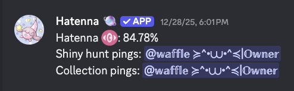

Predictions and pings
Spawn naming, shiny hunt pings, collection pings, and related server-side configuration tools.
Hatenna is built to make Pokétwo servers easier to run and easier to play in. It includes naming assistance, collections, shiny hunts, global sync, feeds, daycare tools, AFK utilities, and server-focused quality-of-life systems.

Hatenna focuses on fast responses, useful data, and server tools that actually help with Pokétwo gameplay instead of getting in the way.
Hatenna is centered around Pokétwo utility. It helps with predictions, public feed systems, personal ping systems, and data-backed features that make day-to-day server use easier.
Spawn naming, shiny hunt pings, collection pings, and related server-side configuration tools.
Global collections and global shiny hunts across servers users are present in.
Catch, hatch, unbox, and balance-related systems for users on Pokétwo.
Daycare and breeding helpers intended for practical Pokétwo use with configurable command outputs.
Timed and manual AFK controls for shiny hunt and collection pings with clear user-side status handling.
Settings, categories, reserve tools, extraction utilities, and feature controls for organized servers.
If you want to support Hatenna, you can do so here.
Donate